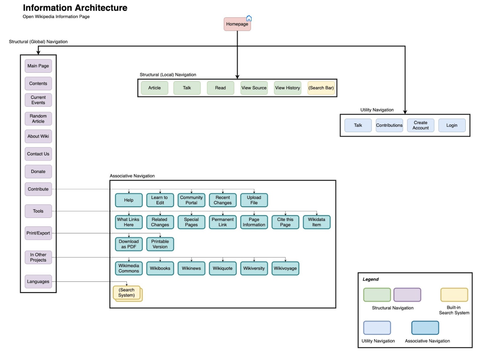
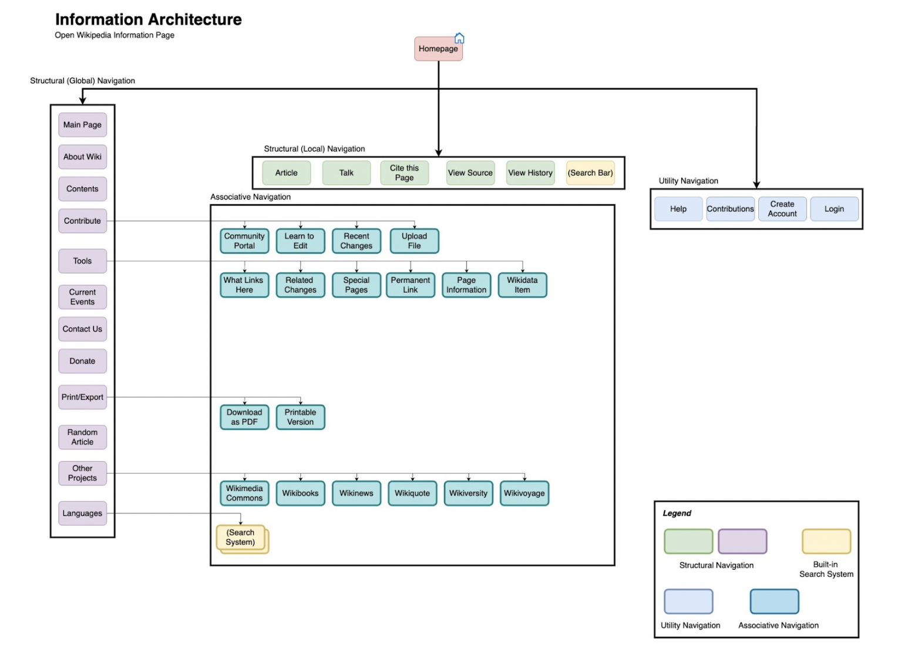
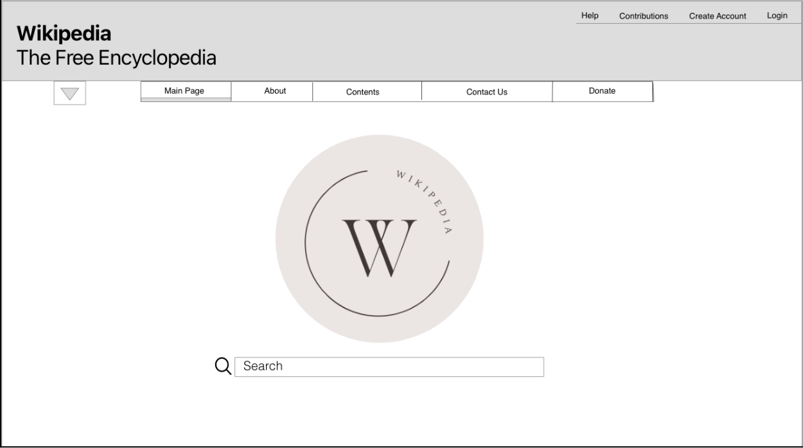
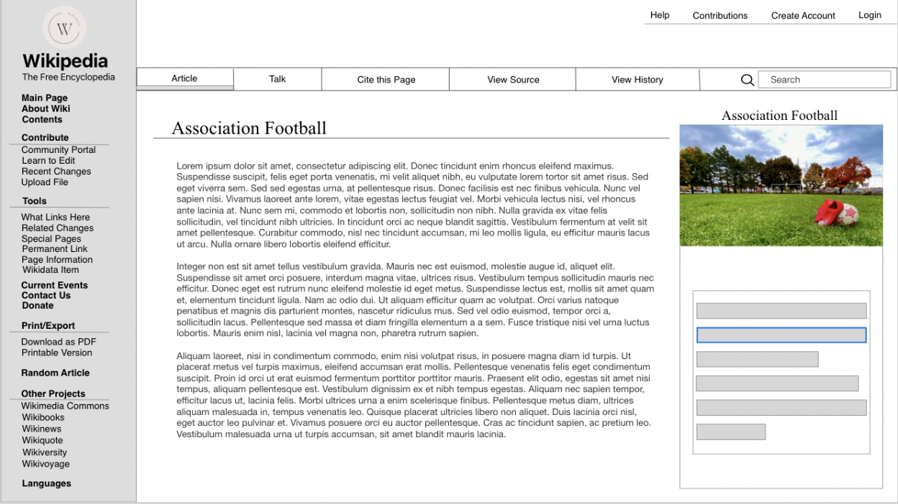
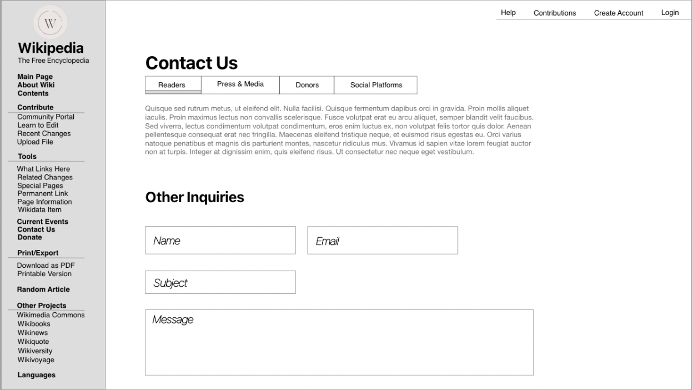
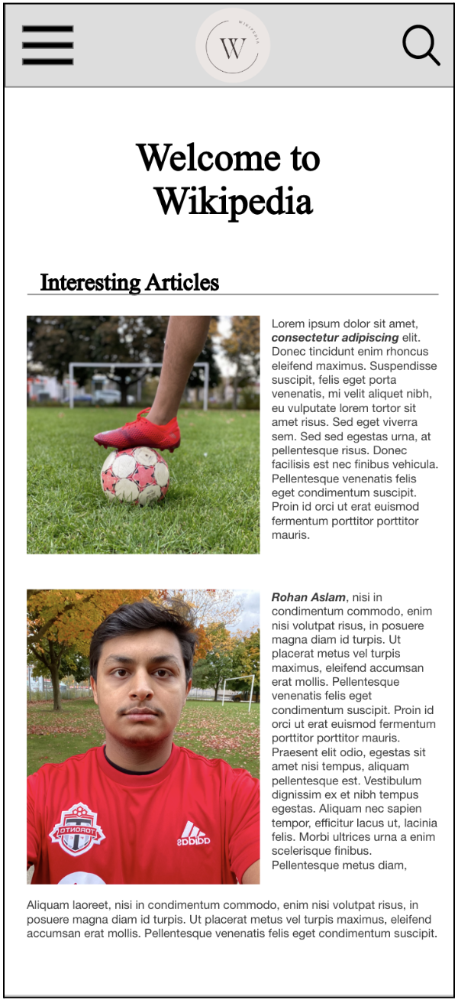
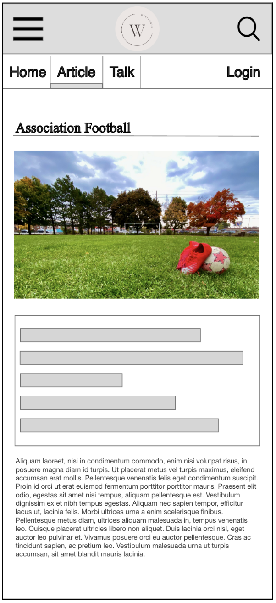
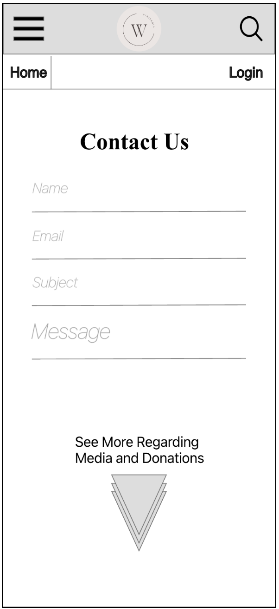

Thinking Process
For this project, I settled on covering the Wikipedia page regarding Association Football or “Soccer”. Below I have mapped the content present to a node-link diagram to show the existing Information Architecture of the page. Furthermore, within the IA I have identified and labelled the different sorts of navigation found on a page such as Structural, Associative and Utility. Below is the existing IA:
Moreover, the task for this part of the assignment was to create a revised IA with concepts covered in class. Below is the new IA that I have designed:
Testing and Process: The changes I brought to the IA were heavily influenced by usability and improving the overall user experience. To begin, I noted down points of focus mentioned in class and readings that I should use for my IA and Wireframe. These points are noted below:
- Create a simple yet resourceful design that does not overwhelm users with options but allows them access to many things at their fingertips.
- Who will be using the website, and what are their goals?
- Simplify, not complicate, categories. If the same options are present under different titles, find a way to streamline or combine them.
- Think of the business aspect. Presenting options such as "Donate" or "Contact Us" properly to the user to help the business side as well.
- Move things where they should be. If a crucial option is hidden within categories, move it to a more seen area.
- Keep space. Assume the information on the website will only grow. Therefore, scalability must be considered.
Moreover, for testing, I explored the website and tried to find things I could improve upon. This was done by entering the website through pages other than the homepage. Also, I tried to complete tasks such as creating citations, printing and exporting, searching for articles and logging in and out to find any gaps I could fill. I looked for things that even I was having trouble with. By doing this, I identified poor designs, which I changed within the new IA and wireframe.
Changes
Within the Structural (Local) Navigation of the Initial IA, the "Talk" and "Read" options were redundant as they refer to the same page. Therefore within my new IA, I removed the "Read" option and added a "Cite this Page" option which was previously hidden within Structural (Global) Navigation. The Utility Navigation, which is present at the top right of the screen, previously had a talk option which was present again right beneath it in the Structural (Local) Navigation. Therefore, I removed it from the Utility navigation and added a help option which was under the contribute category in the Structural (Global) Navigation before. Structural and order changes were also made to the Structural (Global) Navigation, where some important options were at the bottom instead of the top. Options such as "Random Article" were presented at the top when they did not need to be. During testing, I found myself scrolling down for specific options, so I decided to focus on bringing them to the top. I moved the "Contribute" and "Tools" options up the order as these are essential for anyone wanting to contribute. The "About Wiki" option was also brought up so anyone new to the site can have access and learn about the cause. The "Donate" and "Contact Us" options were moved two spots down but remained in the middle due to the importance of the business and marketing aspect of the website.
Wireframes
For the Wireframe, I created three pages for desktop and three corresponding pages for mobile. The wireframes were created with information gathered through the planning and Information Architecture stages. All media presented within the wireframes was produced using techniques learned in class, such as depth of field, rule of thirds and screen direction. The logo on the wireframe was also created by myself using adobe illustrator.
Desktop Wireframe
Main Page
Article Page
Contact Us Page
Mobile Wireframe
Main Page
Article Page
Contact Us Page
Process
Initially, I thought about everything that makes a wireframe the best it can be. For this, I went on some websites that I personally love the interface of, such as Apple, Airbnb and Netflix. Then, I looked at things that these websites do well and noted them down along with concepts that I thought should be applied within my wireframe:
- Many users may enter the site from somewhere other than the main page. So, the concept of front doors is crucial, and we should leave an option for homepage access on every screen.
- Optimize the website for the type of people that will use it and their goals.
- Simplifying the interface so new users easily find everything they are looking for.
- Maintaining efficiency by presenting options such as "Cite this Page" at the forefront, so the users do not have to look into different categories to find a tool they need.
- Titles and headers are present so the user knows what they may find when digging through or looking in categories and options.
- Protect the user's view by making down drop option for the mobile version so that the article is not hidden.
All these points were used when making the wireframe to ensure user
usability and experience.
In conclusion, I was able to analyze a large website and remake it
with usability as a focus. I took an existing Information
Architecture and made changes to it with concepts and theories
learned so far within the course. I was then able to visualize and
present my changes through a node-link diagram and wireframes
compromised of original media production, content production and
design.